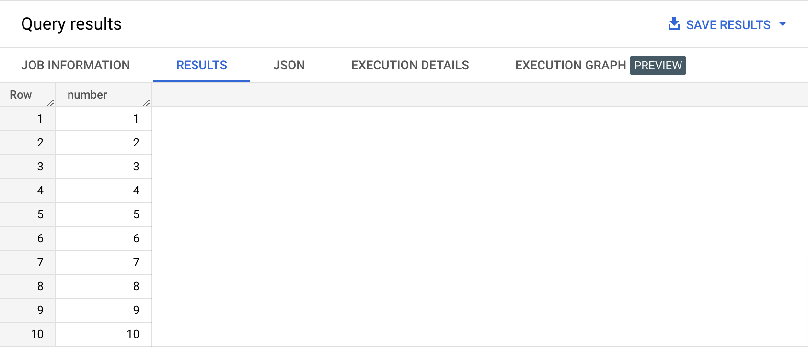
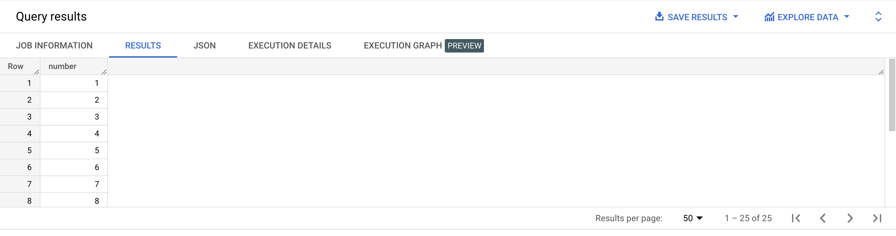
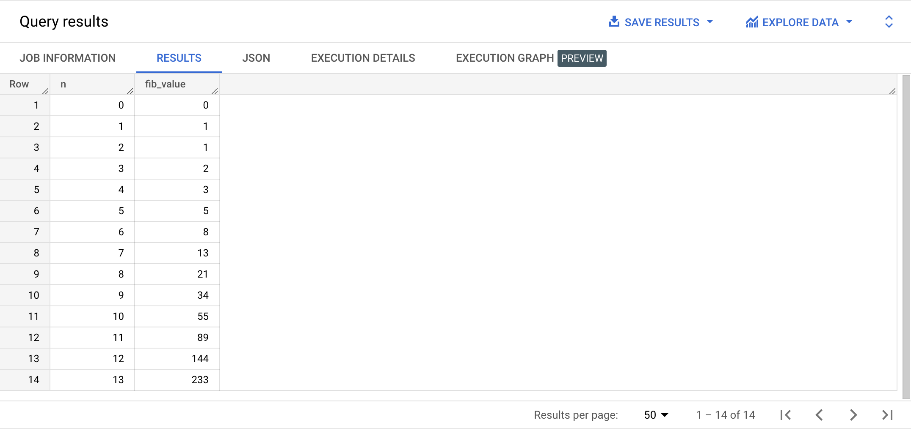
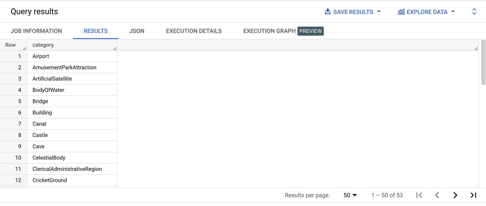
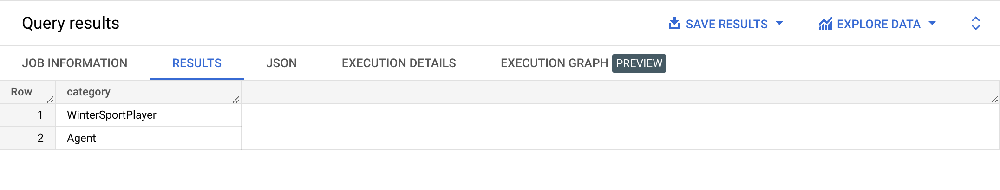

Recursive queries are query that reference themselves. How is that useful? It’s usually used when we have hierarchical or nested relationships, like parent and child elements.
For example if we are dealing with managers and employees, how do we display the chain of managers above a particular employee? We would need to get the manager immediately above this employee. Let’s call her manager m. Then we would need to use the same logic to get the manager of this manager, let’s call her m+1. Then manager m+2, manager m+3 until we get to the CEO of the company.
How to display all sub-managers under a specific manager? We would need to get the manager immediately under this manger. Let’s call him manager m. Then we would need to use the same logic to get the manager under this manager, let’s call her m-1. Then manager m-2, manager m-3 until we get someone without direct reports.
Here are the steps to write a recursive query:
WITH RECURSIVE clauseUNION ALL.WHERE, to ensure that our recursion doesn't create an infinite loop.Okay, maybe now you're like this, right?
Don't worry, there's an example coming! 😉
Type the query below in the BigQuery console and run it. Don't copy paste. 😉
WITH RECURSIVE first_ten_numbers AS -- common table expression
( SELECT 1 AS number -- initial subquery for the first row we need to display
UNION ALL
SELECT number + 1 -- beginning of the subquery for the rest of the rows we need to display
FROM first_ten_numbers -- reference to the first row
WHERE number < 10 -- end condition
)
SELECT *
FROM first_ten_numbers
ORDER BY number ASC;
Example results:

{% include practice_problems_intructions.html %}N/A
Write a query that will display the sequence of integers from 1 to 25.

WITH RECURSIVE first_25_numbers AS
(
SELECT 1 AS number
UNION ALL
SELECT number + 1 FROM first_25_numbers WHERE number < 25
)
SELECT *
FROM first_25_numbers
ORDER BY number ASC;
N/A
In mathematics, the Fibonacci numbers, commonly denoted Fn , form a sequence, the Fibonacci sequence, in which each number is the sum of the two preceding ones. The sequence commonly starts from 0 and 1, although some authors start the sequence from 1 and 1 or sometimes (as did Fibonacci) from 1 and 2. Starting from 0 and 1, the first few values in the sequence are: 0, 1, 1, 2, 3, 5, 8, 13, 21, 34, 55, 89, 144.
https://en.wikipedia.org/wiki/Fibonacci_number
Write a query that displays the first 14 numbers of the Fibonacci sequence, so from number n = 1 to number n = 14.

WITH RECURSIVE fib_n AS
(
SELECT 0 AS n,
0 AS fib_value,
1 AS next_fib_value
UNION ALL
SELECT n + 1,
next_fib_value,
fib_value + next_fib_value
FROM fib_n
WHERE n < 13
)
SELECT n,
fib_value
FROM fib_n
ORDER BY n ASC;
At your discretion 🙂

WITH RECURSIVE descendants AS
( SELECT category
FROM example_dataset.subqueries_only_categories()
WHERE category = 'Place'
UNION ALL
SELECT categories.category
FROM descendants
INNER JOIN example_dataset.subqueries_only_categories() AS categories
ON categories.parent = descendants.category
)
SELECT category
FROM descendants
WHERE category != 'Place'
ORDER BY category ASC;
At your discretion 🙂

WITH RECURSIVE ascendants AS
(
SELECT category,
parent,
0 AS level
FROM example_dataset.subqueries_only_categories()
WHERE category = 'Curler'
UNION ALL
SELECT categories.category,
categories.parent,
ascendants.level + 1 AS level
FROM ascendants
INNER JOIN example_dataset.subqueries_only_categories() categories
ON categories.category = ascendants.parent
)
SELECT category
FROM ascendants
WHERE category != 'Curler'
ORDER BY level;